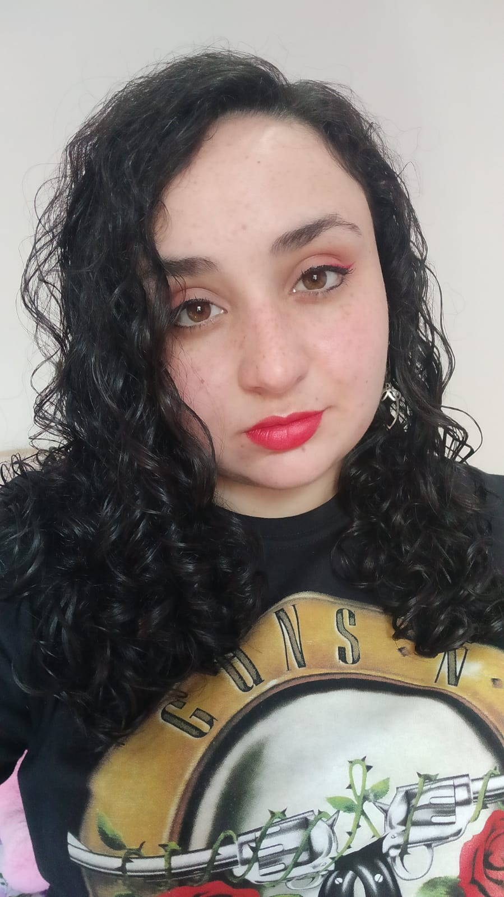

Prezamos pela qualidade de nossos produtos, e por isso utilizamos canecas de cerâmica importadas.
Como é feita a estampagem?
Utilizamos a técnica de impressão e sublimação para estampar nossas canecas.
Para saber mais sobre este processo, assista o vídeo ao lado.
Nossa Fundadora

Amanda Gonçalves
Desde criança gosto de desenhar e criar, a Aurinko foi a forma que encontrei de transformar este gosto em um trabalho.
Amo o que faço e por isso prezo pela qualidade dos produtos e satisfação do cliente.